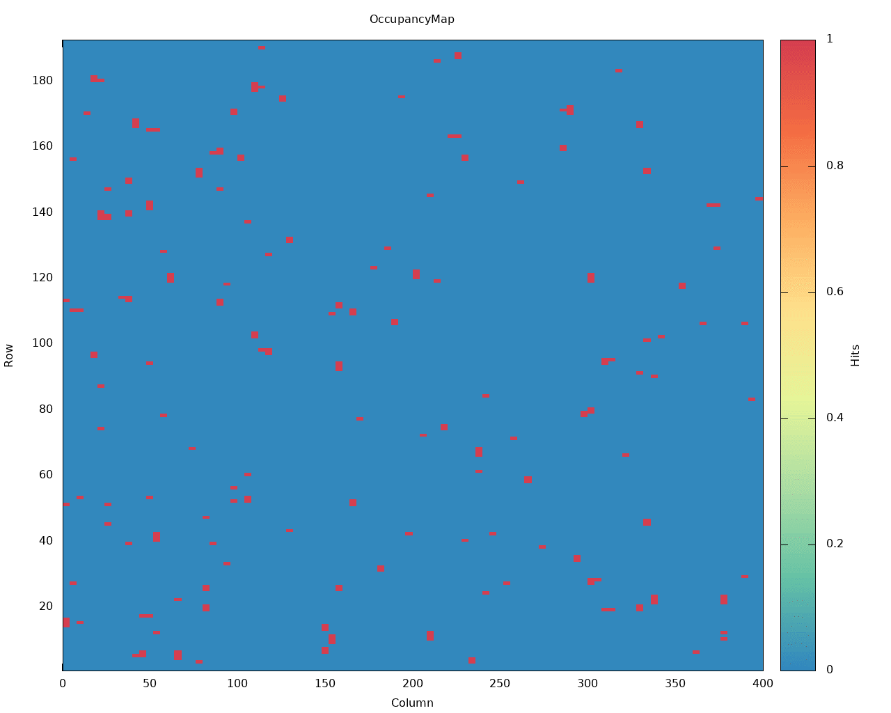
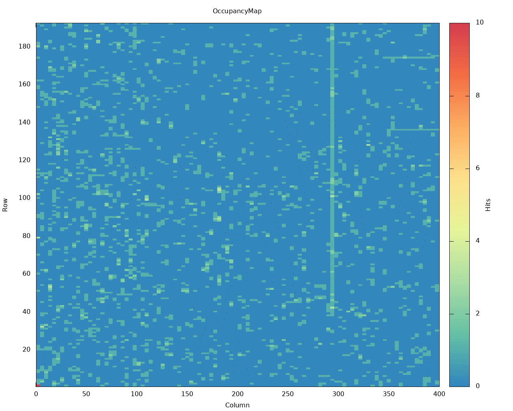

Usage Examples¶
For the full_speed and 160_speed branches. The trigger data produced by the system currently consists of randomly placed tetris pieces and lines. The quanity produced depending on the value of the global register 90. A low register value produces a high quanity of data and a high register value produces a low quanity of data. Examples are shown below.
High register value
Low register value
